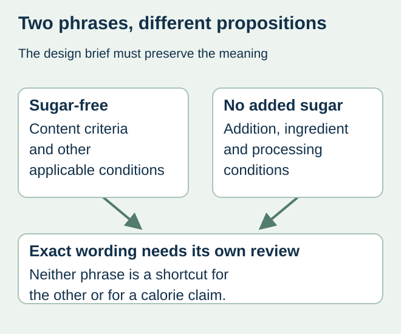
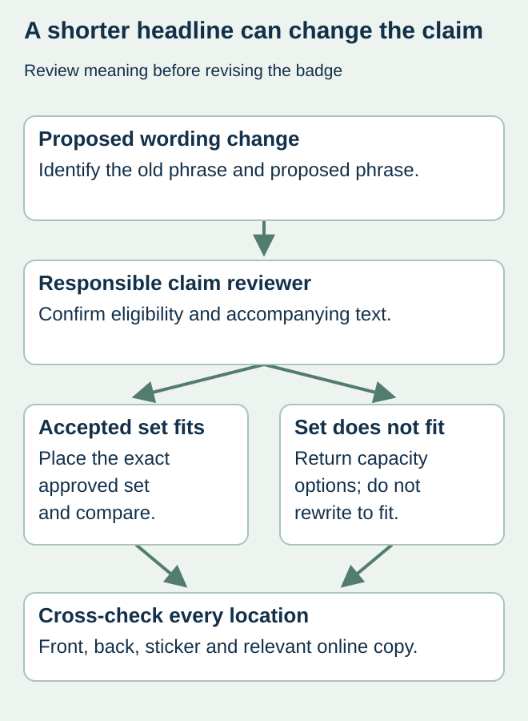

A front-label headline is shortened from “no added sugar” to “sugar-free” to fit a badge. The change looks editorial, but it changes the proposition about the food. A design team should not treat these phrases as equivalent ways to describe the same product.
Freeze the exact claim and its supporting conditions with the responsible food-label reviewer before placing it in artwork. Keep any accompanying statement in that approval set. Numeric nutrition information and a front-of-pack claim need related but distinct review.


The phrases ask different questions
For foods within its scope, 21 CFR 101.60(c) sets different conditions for sugar-free and no-added-sugar claims. The former involves sugar-content and other conditions; the latter involves conditions concerning added sugars, ingredients and processing. Relevant accompanying calorie statements can also matter. The responsible reviewer must assess the complete current rule for the actual food; this comparison does not establish eligibility.
Naturally occurring sugars mean the absence of added sugar is not the same statement as the absence of sugar. Conversely, a rounded number on a nutrition panel should not be treated as a complete claim-substantiation decision. Ask the reviewer to provide the accepted phrase rather than having the designer infer it from the displayed grams.
Create a claim control line for each SKU
| Field | Accepted source | Design restriction |
|---|---|---|
| Exact claim | Reviewer-approved phrase and market | No synonym or abbreviation without review |
| Product scope | SKU, formula and process version | No automatic transfer to another flavor |
| Evidence decision | Responsible reviewer and reference | Not replaced by a competitor’s label |
| Accompanying text | Accepted wording and presentation requirements | Not deleted to make a badge fit |
| Related locations | Front, back, sticker and relevant online copy | No conflicting claim left in another location |
This control line can reference confidential evidence without putting recipes or reports in the artwork folder. Its purpose is to make the approved output unambiguous. If the reviewer has not resolved a condition, mark the claim as pending; a blank approval cell should not look like permission.


Route changes by meaning, not by word count
In a hypothetical fruit-based food launch, the brand asks for a shorter headline after approving the back panel. The design owner should show the proposed wording to the claim reviewer before exporting the new front. The presence of an accepted nutrition panel does not authorize a different promotional claim.
If the approved phrase and accompanying information do not fit, explore a larger or differently arranged label area with packaging and the reviewer. Do not silently replace it with “zero,” remove a qualification or alter the message through a large icon beside tiny limiting text. Have the actual presentation reviewed, not only a plain-text email.
Keep the package and sales material aligned
After acceptance, compare every controlled label component with the exact wording source. If relevant ecommerce images or product descriptions repeat the claim, send their owners the accepted change record. The package-to-online synchronization guide covers that separate release coordination.
For repeat orders, ask whether a changed formula or ingredient source affects the earlier claim decision. Preserve the reviewer’s response and identify the production file that carries it. The printer can reproduce supplied approved copy, but a clean proof is not evidence that the food meets the claim conditions.
Discuss the unresolved label requirement
Provide the exact proposed phrase, intended market, product/formula version, reviewer-approved wording and accompanying statements. Mark any claim still under review before requesting production artwork. Prepare a label specification inquiry. The contact page opens an email draft and lists email or WhatsApp for attachments. Supply, proof options, testing, pricing and timing require project confirmation.